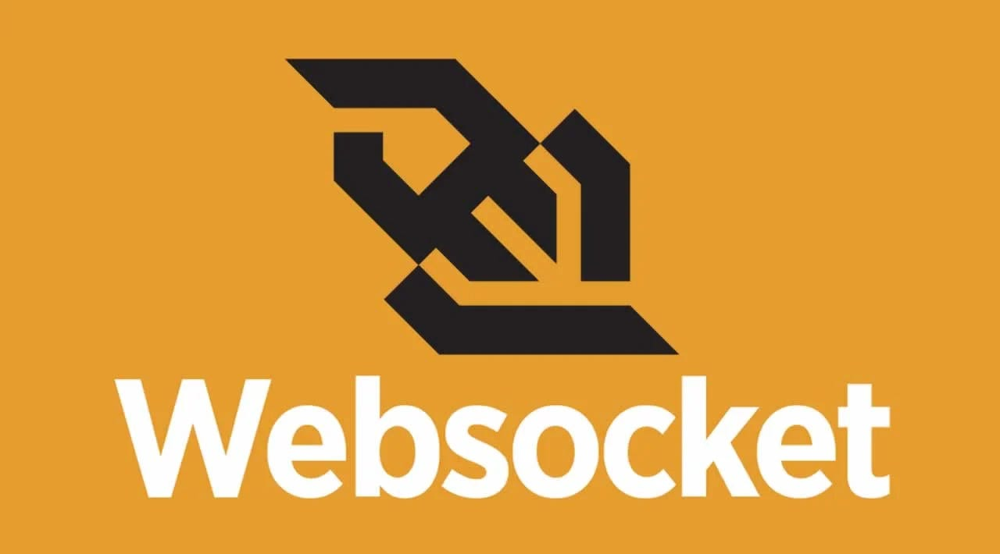
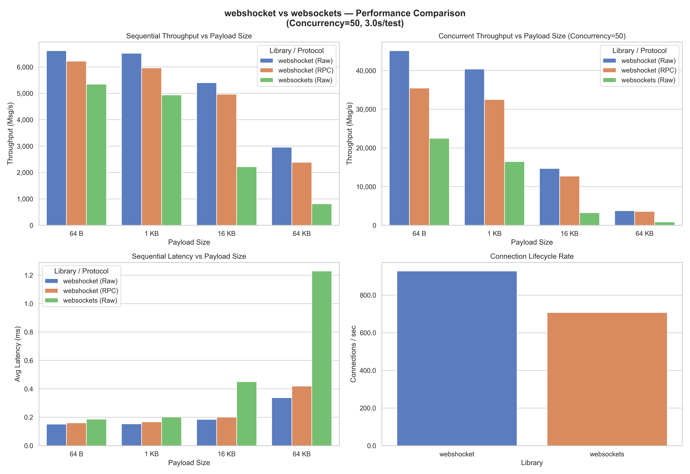

Side project
Webshocket - Python Framework
Framework Python WebSocket dengan RPC, sesi, dan rate limiting bawaan — tanpa boilerplate.

Webshocket adalah framework Python ringan yang dirancang untuk menghilangkan kode berulang (boilerplate) yang muncul ketika membangun aplikasi berbasis WebSocket dari awal. Ketika bekerja langsung dengan API WebSocket mentah, pengembang bertanggung jawab mengimplementasikan segalanya sendiri: meneruskan pesan ke handler yang tepat, mempertahankan status per klien, membatasi laju permintaan, hingga menyusun logika pub/sub. Webshocket mengabstraksikan semua hal tersebut ke dalam antarmuka berbasis dekorator yang terasa seperti menulis kelas Python biasa, bukan lapisan jaringan.
Salah satu masalah utama yang diselesaikan Webshocket adalah kompatibilitas dengan layanan tunnel. Karena Webshocket berjalan di atas WebSocket standar — bukan protokol khusus — ia bekerja langsung dengan layanan tunnel HTTP gratis seperti Cloudflare Argo dan LocalTunnel, menjadikannya solusi ideal untuk mengekspos proyek AI atau IoT lokal tanpa infrastruktur tambahan.
Apa yang membuat Webshocket berbeda?
Berikut fitur-fitur yang Webshocket sediakan secara bawaan (built-in), tanpa konfigurasi tambahan:
- RPC (Remote Procedure Call) bawaan: Definisikan metode server dengan dekorator — langsung bisa dipanggil dari klien.
- Manajemen sesi per klien: Tetapkan atribut langsung ke objek koneksi tanpa lookup table manual.
-
Rate limiting berbasis dekorator: Batasi panggilan metode dengan sintaks yang dapat
dibaca manusia seperti
period="1m". -
Pub/Sub dengan wildcard: Klien berlangganan saluran menggunakan pola glob — satu
panggilan
subscribe()sudah cukup. - Auto-retry dengan exponential backoff: Koneksi terputus ditangani otomatis tanpa loop manual.
- Streaming RPC: Kirim data secara bertahap menggunakan async generator — ideal untuk token AI.
Sistem RPC bawaan adalah fitur paling membedakan Webshocket. Mendefinisikan metode server yang dapat dipanggil dari klien semudah menambahkan dekorator pada sebuah metode kelas:
class MyHandler(webshocket.WebSocketHandler):
@webshocket.rpc_method(alias_name="add")
async def add(self, _: webshocket.ClientConnection, a: int, b: int):
return a + b
@webshocket.rpc_method(requires=webshocket.Is("is_admin"))
async def secret_function(self, conn: webshocket.ClientConnection):
return "Sensitive Data"
Kontrol akses ditangani melalui predicate — aturan deklaratif yang dilampirkan langsung pada metode, tanpa rantai middleware. Data sesi bekerja dengan cara yang sama: atribut cukup ditetapkan langsung ke objek koneksi dan Webshocket menyimpannya selama sesi berlangsung.
@webshocket.rpc_method()
async def login(self, connection: webshocket.ClientConnection, user_id: str):
connection.user_id = user_id
connection.is_admin = True
connection.subscribe("broadcast-channel")
Rate limiting mengikuti pola dekorator yang sama — dengan opsi untuk memutus koneksi klien yang melanggar batas:
@webshocket.rate_limit(limit=5, period="1m")
@webshocket.rpc_method()
async def expensive_operation(self, connection: webshocket.ClientConnection, query: str):
return await run_ai_model(query)
Perbandingan dengan alternatif lain
Untuk memahami perbedaan ini secara konkret, perhatikan skenario sederhana: sebuah metode server yang hanya boleh dipanggil pengguna yang sudah login, dengan batas 5 panggilan per menit:
# Tanpa Webshocket — semua harus dikelola sendiri
sessions = {}
rate_limits = defaultdict(list)
async def handler(websocket):
async for raw in websocket:
data = json.loads(raw)
method = data["rpc"]["method"]
if method == "login":
sessions[id(websocket)] = {"user_id": data["args"][0]}
elif method == "query":
if id(websocket) not in sessions:
await websocket.send(json.dumps({"error": "Unauthorized"}))
continue
now = datetime.now()
calls = [t for t in rate_limits[id(websocket)] if now - t < timedelta(minutes=1)]
if len(calls) >= 5:
await websocket.send(json.dumps({"error": "Rate limit exceeded"}))
continue
rate_limits[id(websocket)].append(now)
result = await run_query(data["args"][0])
await websocket.send(json.dumps({"response": result}))
Kode di atas belum mencakup penanganan disconnect, pembersihan memori, maupun validasi tipe argumen. Dengan Webshocket, skenario yang persis sama cukup ditulis seperti ini:
# Dengan Webshocket
class MyHandler(webshocket.WebSocketHandler):
@webshocket.rpc_method()
async def login(self, conn: webshocket.ClientConnection, user_id: str):
conn.user_id = user_id
@webshocket.rate_limit(limit=5, period="1m")
@webshocket.rpc_method(requires=webshocket.Has("user_id"))
async def query(self, conn: webshocket.ClientConnection, q: str):
return await run_query(q)
Logika yang sama dikompresi dari puluhan baris kondisional menjadi dua metode bersih. Tidak ada dictionary global, tidak ada pembersihan manual. Kompleksitasnya tetap ada — tetapi Webshocket yang menanggungnya.
Tidak hanya itu, WebShocket menawarkan performa yang lebih baik karena menggunakan library WebSocket low-level yang dioptimalkan yakni picows. Dalam pengujian internal, Webshocket mampu menangani ribuan koneksi simultan dengan latensi minimal, menjadikannya pilihan yang solid untuk aplikasi real-time berskala besar.

Webshocket juga mendukung streaming RPC secara bawaan menggunakan async generator, menjadikannya pilihan tepat untuk streaming token AI atau umpan data langsung:
# Server
@webshocket.rpc_method()
async def generate_report(self, connection: webshocket.ClientConnection, query: str):
async for chunk in run_ai_model(query):
yield chunk
# Klien
async for packet in client.stream_rpc("generate_report", "Ringkas laporan Q4"):
print(packet.data, end="", flush=True)
Sebagai proyek open-source yang masih aktif dikembangkan, Webshocket tersedia di PyPI dan dapat dipasang
langsung melalui pip install webshocket. Dokumentasi lengkap tersedia di
web-shocket.readthedocs.io dan kontribusi dari komunitas sangat
terbuka melalui repositori GitHub-nya.